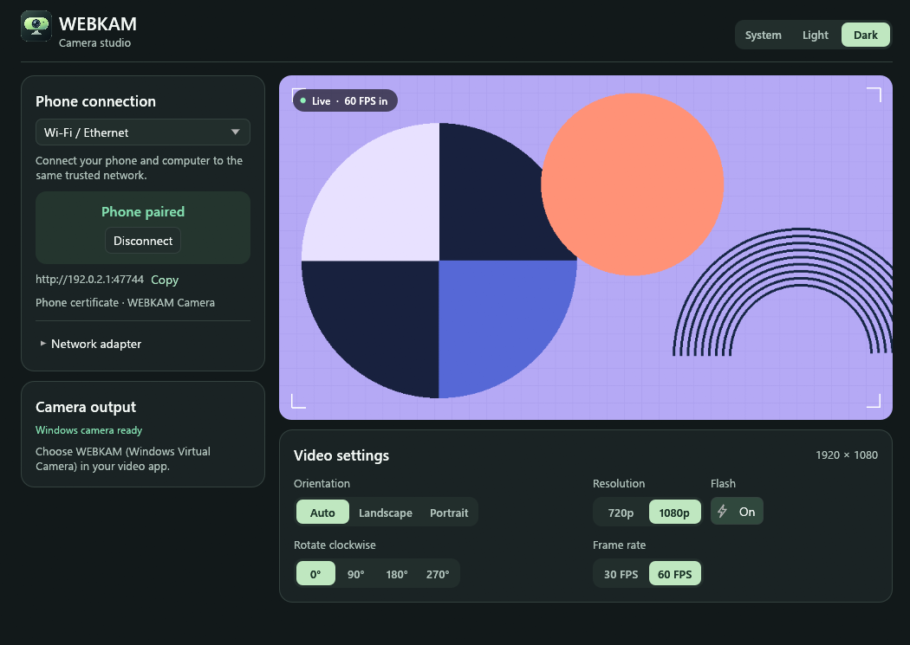
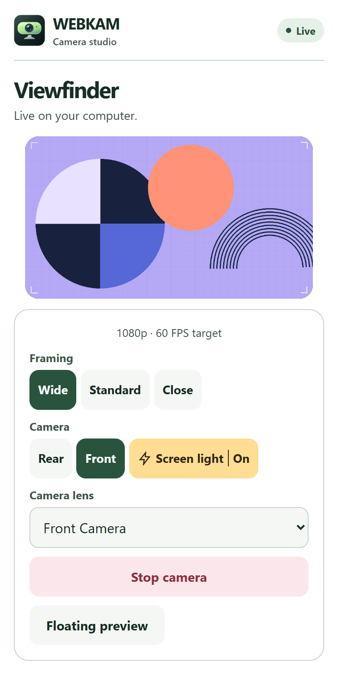

Set the shot from Windows.
Choose 720p or 1080p, switch between 30 and 60 FPS, and rotate the feed in 90° steps. The preview reports the incoming frame rate.
Use your iPhone or Android as a webcam in Discord, Zoom, and other Windows apps.


Explore the app screens with an example camera feed and pairing details.
Choose 720p or 1080p, switch between 30 and 60 FPS, and rotate the feed in 90° steps. The preview reports the incoming frame rate.
Start the camera, choose a lens your phone exposes, and check the target video mode. The iPhone companion also offers a native floating preview on supported devices.
On Windows, choose your connection. Scan the QR code or enter the PC address in the phone companion, then use the eight-digit code shown on your PC.

Switch this sample between landscape and portrait. In the Windows app, Auto also follows your phone as you turn it.

Install the receiver and choose Wi-Fi or your phone’s USB connection.
Scan the QR code or enter the PC address in the companion. Complete certificate setup if prompted, enter the pairing code, and tap Start camera.
In Discord, open Voice & Video and select WEBKAM (Windows Virtual Camera). Choose your microphone separately.
WEBKAM is free to download and use on all three platforms. Install the Windows receiver first.
Guided installer with the virtual camera and optional USB components.
Signed APK with Wi-Fi, supported USB connections, and floating preview.
Hybrid companion. Personal signing is required. Native floating preview awaits a physical iPhone test.